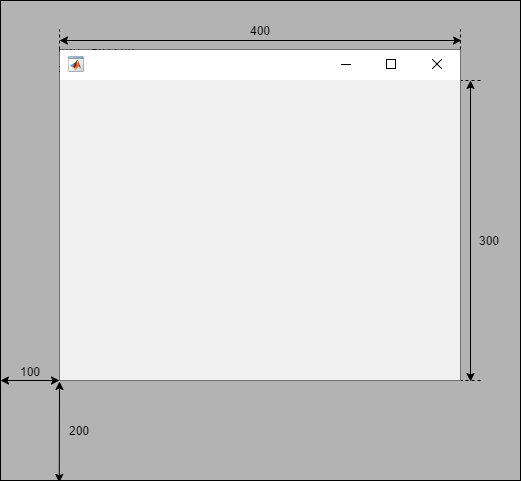
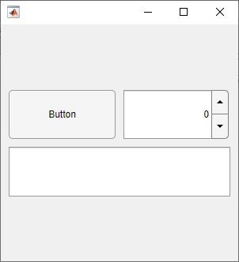
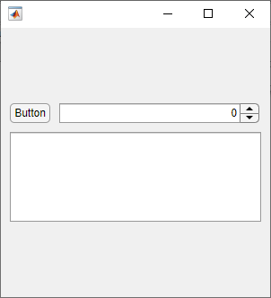
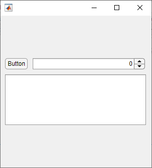
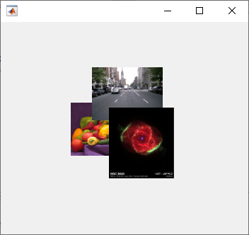
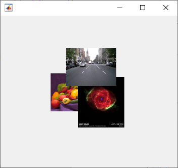

Lay Out Apps Programmatically
An app consists of a figure and one or more UI components that you place inside the figure. MATLAB® app building tools provide many options for managing the layout of an app programmatically. For example, you can write code to specify the size and location of the figure and its components, align components with respect to one another, and specify the front-to-back component order.
Manage Figure Size and Location
A figure serves as the top-level container for every app. Use the uifigure function to create a
figure configured for app building.
Update the size and the location of the figure on the app user's display by
setting the Position property of the figure. Specify
Position as a four-element vector in this form:
[left bottom width height]
| Element | Description |
|---|---|
left | Distance from the left edge of the primary display to the inner left edge of the figure window |
bottom | Distance from the bottom edge of the primary display to the inner bottom edge of the figure window |
width | Distance between the right inner and left inner edges of the figure |
height | Distance between the top inner and bottom inner edges of the figure |
For example, this code creates a figure window that is 100 pixels from the bottom edge and 200 pixels from the left edge of the primary display, and that is 400 pixels wide and 300 pixels tall, excluding the figure borders and title bar.
fig = uifigure; fig.Position = [100 200 400 300];

To position a figure window in a specific location on an app user's screen,
independent of the user's display size, use the movegui function. Specify the figure and the display location. For
example, this code moves the figure window to the center of the app user's primary
display.
movegui(fig,'center');Lay Out UI Components
To design the visual appearance of your app, set the size and location of the UI components within the figure window. Lay out the components using one of these methods:
Use a Grid Layout Manager — Align your UI components with respect to one another, and allow the app to manage how your components resize. This method is recommended for most app building purposes.
Specify the Position Property — Manually position your components in the initial app layout. This method is useful when you want to specify custom resize behavior outside of the options of a grid layout manager.
Use a Grid Layout Manager
A grid layout manager is a container that lets you lay out UI components in
rows and columns. Create a grid layout manager for your app using the uigridlayout function, and parent the grid layout manager to the
main figure window. You can manage the size and configuration of the grid by
setting properties of the GridLayout object. Add components
to the grid by parenting them to the grid layout manager, and specify the row
and column of each component by setting its Layout
property.
For example, use a grid layout manager to lay out an app that contains a button, a spinner, and a text area. Give the button a fixed size, but let the other components stretch to fill the extra horizontal space. Also, center the components vertically by adding empty rows above and below them that can expand to fill the extra vertical space.
To accomplish this, create a grid with four rows and two columns by passing
[4 2] as the second input to
uigridlayout.
fig = uifigure; fig.Position(3:4) = [300 300]; gl = uigridlayout(fig,[4 2]);
Then, create the UI components and parent them to the grid layout manager. Lay
out the components using the Layout.Row and
Layout.Column properties.
Position the button and the spinner next to each other by adding them to the second row.
btn = uibutton(gl); btn.Layout.Row = 2; btn.Layout.Column = 1; spn = uispinner(gl); spn.Layout.Row = 2; spn.Layout.Column = 2;
Position the text area underneath by adding it to the third row. Lay out the
text area to span both the first and second column of the grid by setting its
Layout.Column property to [1
2].
ta = uitextarea(gl); ta.Layout.Row = 3; ta.Layout.Column = [1 2];

When you create a grid layout manager, by default, each row has the same
height and each column has the same width. Resize and reposition the UI
components by setting the RowHeight and
ColumnWidth properties of the grid layout
manager.
Set the height of the second row to automatically scale to fit its contents,
and the height of the third row to be fixed at 100 pixels. Set the heights of
the first and fourth rows to '1x'. This specifies that the
top and bottom rows have the same height and expand to fill the remaining
vertical space, which ensures the components are centered in the figure
window.
gl.RowHeight = {'1x','fit',100,'1x'};Set the width of the first column to automatically scale to fit its contents.
This resizes the width of the button to fit the length of its text. Set the
width of the second column to '1x' to fill the remaining
horizontal space.
gl.ColumnWidth = {'fit','1x'};
An additional benefit of using a grid layout manager is that you can use the
ColumnWidth and RowHeight
properties to manage how the UI components in your app resize when the app user
resizes the figure window. For more information, see Manage App Resize Behavior Programmatically.
Specify the Position Property
Alternatively, you can manually position the UI components in you app. Every
UI component has a Position property. Use this property to
control the size and location of the component in the figure window. Specify the
value of Position as a four-element vector of the form
[left bottom width height].
For example, use the Position property to lay out an app
that contains a button, a spinner, and a text area. Align the button and the
spinner horizontally by specifying that they have the same distance from the
bottom edge of the figure and the same height. Position the text area below the
button and slider, and set its width to span the width the two components
above.
fig = uifigure; fig.Position(3:4) = [300 300]; btn = uibutton(fig); btn.Position = [10 195 45 22]; spn = uispinner(fig); spn.Position = [65 195 225 22]; ta = uitextarea(fig); ta.Position = [10 85 280 100];

The position of a UI component is calculated relative to the immediate parent
of the component. For instance, if you create a label inside a panel, the values
of left and bottom in the position vector
of the Label object indicate the distance from the left and
bottom edges of the panel, not the figure window.
Change Front-to-Back Component Order
The stacking order of UI components determines which components appear in front of other overlapping components in an app. The default stacking order of components is as follows:
UI components and containers appear in the order in which you create them. New components appear in front of existing components.
Axes and other graphics objects appear behind UI components and containers.
An exception to this default order is for tabs within tab groups. The first tab created in a tab group appears on top of the other tabs.
For example, this code creates three overlapping images in a figure. The image created first is on the bottom, and the image created last is on top.
fig = uifigure; fig.Position = [100 100 350 300]; peppers = uiimage(fig); peppers.ImageSource = "peppers.png"; street = uiimage(fig); street.ImageSource = "street1.jpg"; street.Position(1:2) = [130 150]; nebula = uiimage(fig); nebula.ImageSource = "ngc6543a.jpg"; nebula.Position(1:2) = [150 80];

To modify the stacking order in your app, use the uistack function. For example,
bring the image of the street to the top by rearranging the stacking order of the
images.
uistack(street,"top")
There are some restrictions on stacking order. Axes and other graphics objects can stack in any order with respect to one another. However, axes and other graphics objects always appear behind UI components and containers.
You can work around this restriction by parenting graphics objects to separate
containers. Then, you can stack those containers in any order. To parent a graphics
object to a container, set its Parent property to be that
container. For example, you can parent an Axes object to a panel
by setting the Parent property of the Axes
to be the panel.